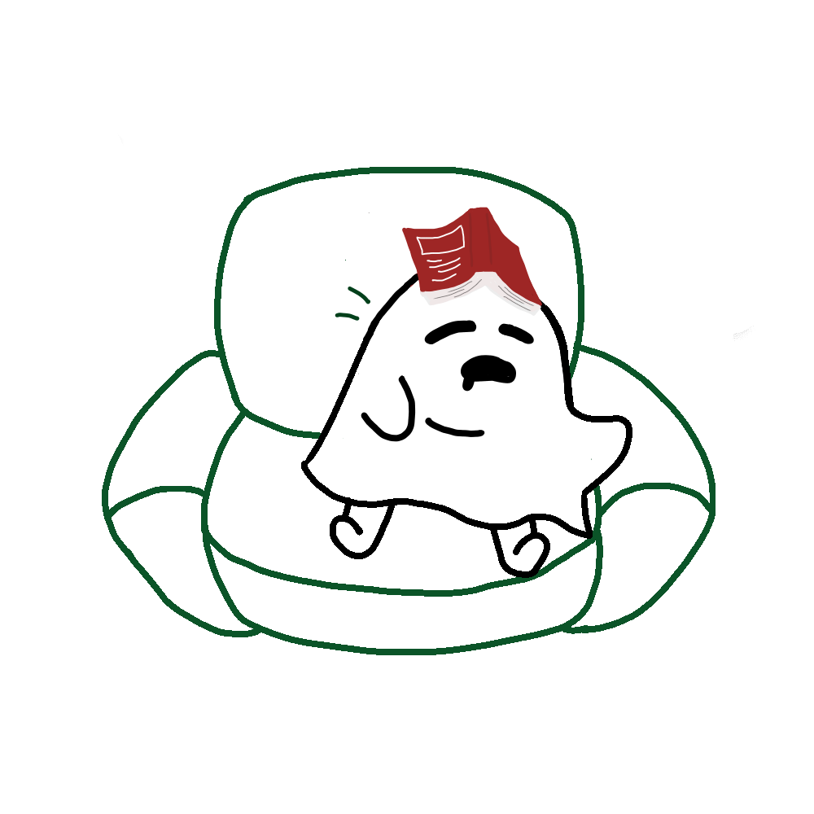

도서관 쇼파 지박령

가능한 에너지 소비를 하지 않으려 하며, 항상 도서관 쇼파에서 휴식을 취하다 지박령이 되었다.
과묵하며 절제된 호기심으로 인생을 관찰하고, 상황을 파악하는 민감성과 도구를 다루는 뛰어난 능력이 있다.
필요 이상으로 자신을 발휘하지 않으며, 일과 관계되지 않는 이상 어떤 상황이나 인간관계에 직접 뛰어들지 않는다.
고집이 세고 주관이 뚜렷하다. 겉으로는 완만해 보이지만, 속으로는 완고한 편이다.
운명의 지박령
사람을 좋아하는
순지 지박령
맞지 않는 지박령
모임을 좋아하는
과방 지박령